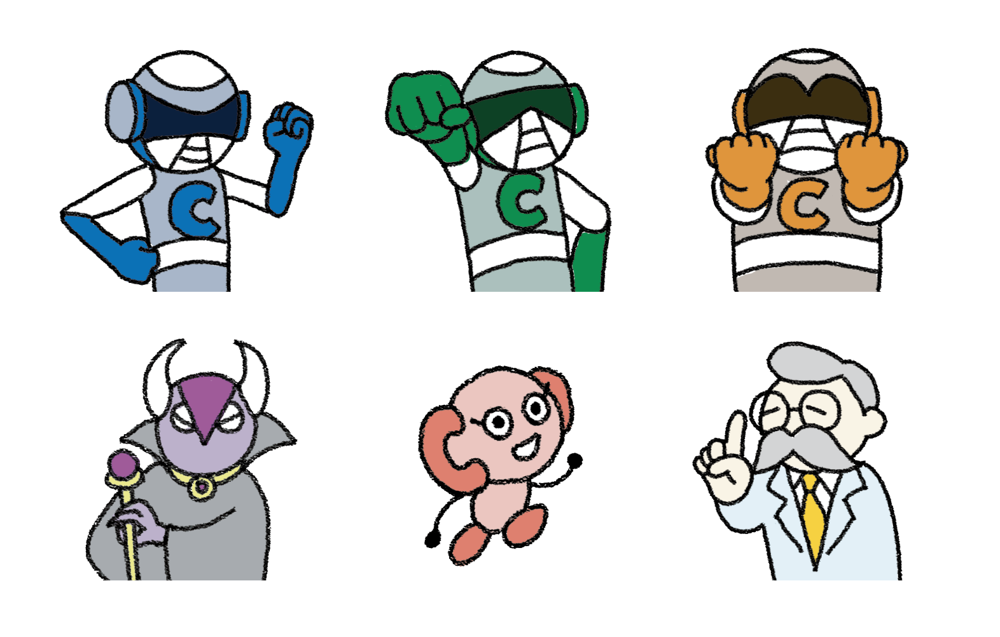

3Cラボ
NCC株式会社
キャラクターデザイン / イラスト
2019. 01 ~

キャラクターデザイン / イラスト
2019. 01 ~
ＮＣＣ株式会社のサービスをわかりやすく、キャッチーに紹介するブログサイト「３Cラボ」のためのキャラクターデザイン。戦隊ヒーローものにしたいというご依頼の元、大きな３つの事業、「洗浄」「塗装」「クリーン化」それぞれを３人のヒーローで表現。合わせて、作業の無駄を生み出す悪役、お助けキャラの妖精と博士を制作しました。
連載されているブログ記事では、悩みを抱えた相談者たちを、必殺技（＝ＮＣＣ株式会社の提供する製品やサービス）を使って解決。その記事内の挿絵制作も行なっています。
＜ BACK
© Moeri Ito